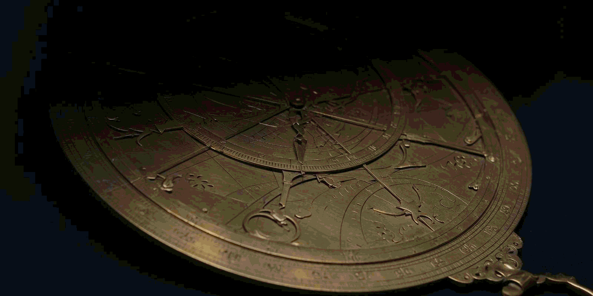
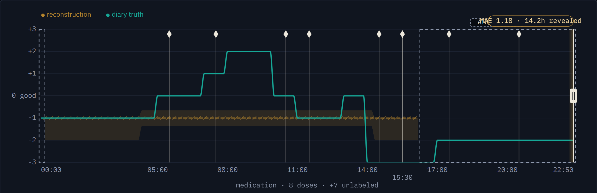
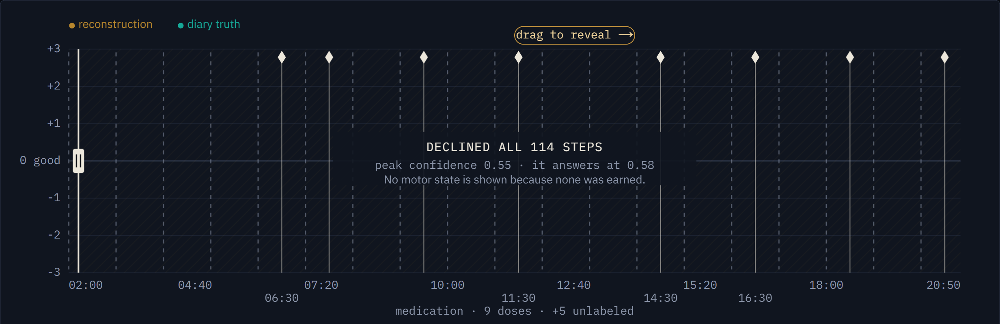

Reconstructs the hours a Parkinson's symptom diary never recorded, from two wrist sensors — and refuses, hour by hour, wherever the evidence cannot carry an answer.
Symptoms fluctuate hour to hour. The clinic visit that sets medication sees one of those hours. The diary meant to fill the gap is a chore, so it stops getting filled.
Coverage is earned, not asserted. Asking for 90% of posterior mass does not give 90% empirical coverage. The interval is widened on held-out people until measured coverage reaches target.
Abstention holds an error budget, not a rate. Tune to a fixed refusal rate and a degraded sensor cannot show degradation. Fix the error budget and a worse one can only comply by answering less.

A participant held out of training — the model is meeting them for the first time.

114 of 114 steps declined. Peak confidence 0.55; it answers at 0.58. That is the system working.
| Holds | ||
| The 90% interval really contains the truth | 0.903 | against a 0.90 target |
| Refusing improves what remains | 0.713 → 0.825 | all hours vs the most confident quarter |
| Losing a wrist costs answers, not accuracy | 12.4% → 77.3% | hours declined, same error budget |
| Does not | ||
| 7-state motor scale, ordinal MAE | 0.684 | worse than a 0.594 constant |
| Median within-participant tremor AUC | 0.550 | the figure a diary is judged on |
So we do not predict how the day felt. That row stays yours — what you reported, or an honest blank. It is on our landing page, not in a footnote.
Not a medical device. No diagnostic, dosing or treatment claim is made. COPS data CC-BY 4.0 — 66 people with Parkinson's, bilateral wrist accelerometry.